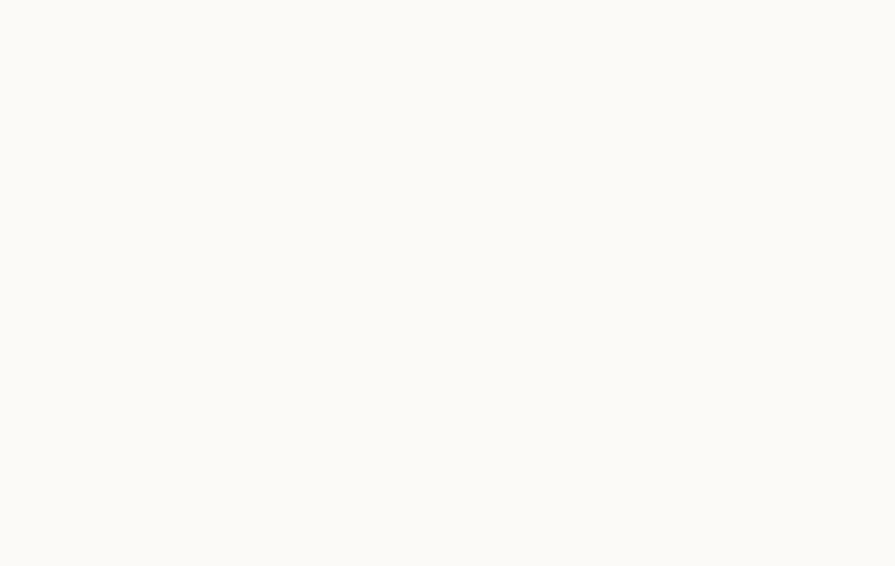

准备录制
我的笔记
实时字幕
本地会议
设置
连接同一局域网内的手机设备，查看连接状态与录音使用情况。
把手机变成随身会议助手。连接电脑后，在手机上录音、查看实时字幕和会议纪要，享用电脑端的转写与 AI 功能。也可以先离线录音，稍后连接电脑上传整理。
扫码安装 TestFlight，再打开邀请邮件中的链接安装 Brevia。仅受邀账号可用，尚未在 App Store 正式上架。
扫码或点击链接，从 ModelScope 下载 APK。安装后可在手机设置中检查更新。
2 分钟内有效